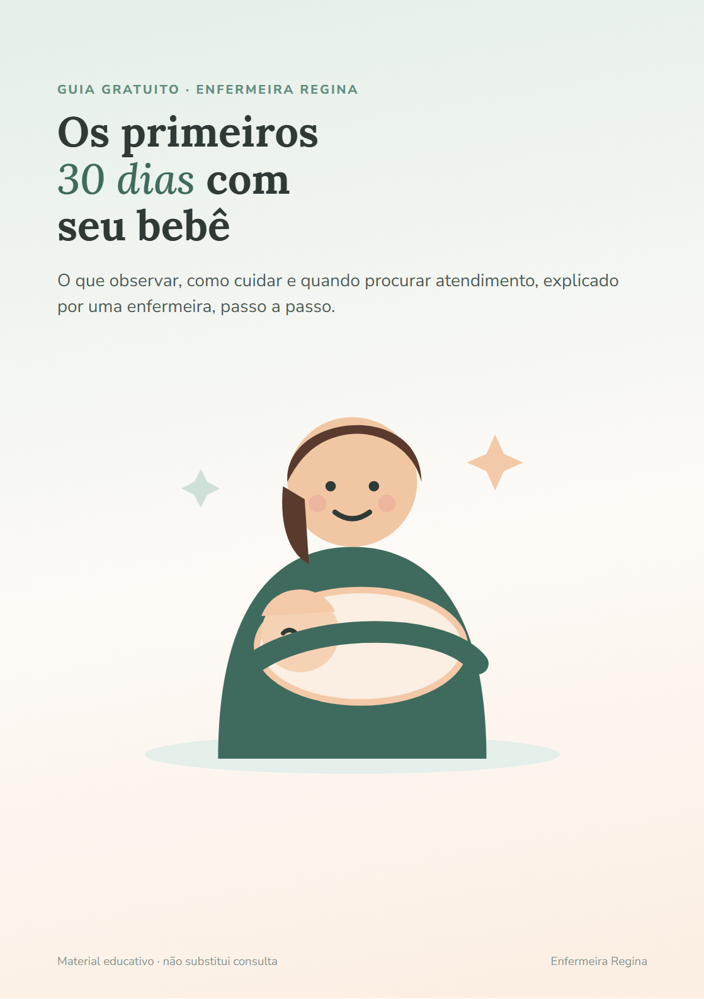

O que observar, como cuidar e quando procurar atendimento, explicado por uma enfermeira, passo a passo. Para ler de madrugada, no celular.
Baixar o guia grátis (PDF)17 páginas ilustradas · sem cadastro · abre no celular

Conteúdo novo todos os dias no Instagram @enfermeirareginarn.